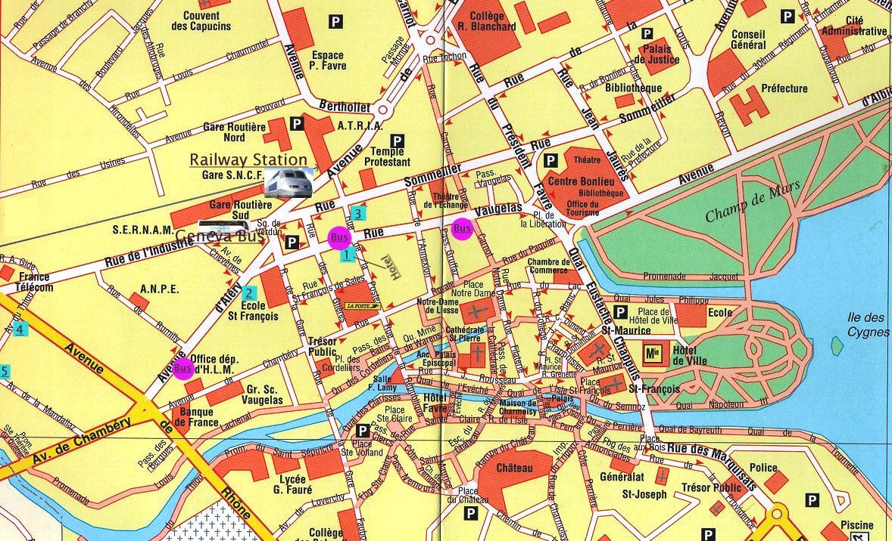

-
The green squares show the location of some
hotels from our list.
-
The purple circles show some bus stops for line 4, which goes to LAPP
and LAPTH. Take it
until the terminus called "IUT", then walk for a couple of
minutes, following the indications for LAPP.
-
The map also indicates the railway station and the coach terminus from Geneva.
